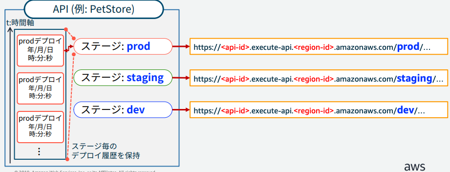
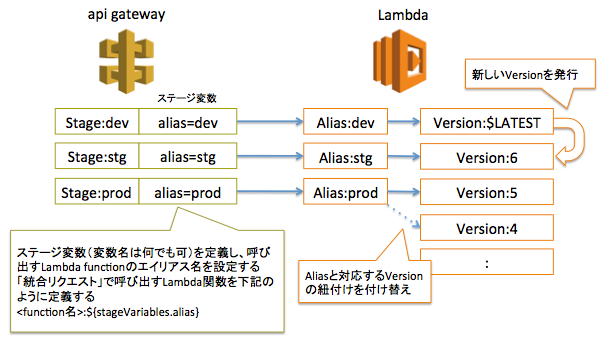
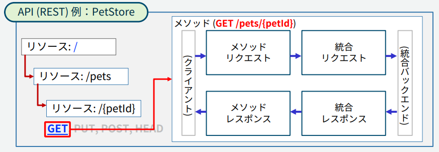
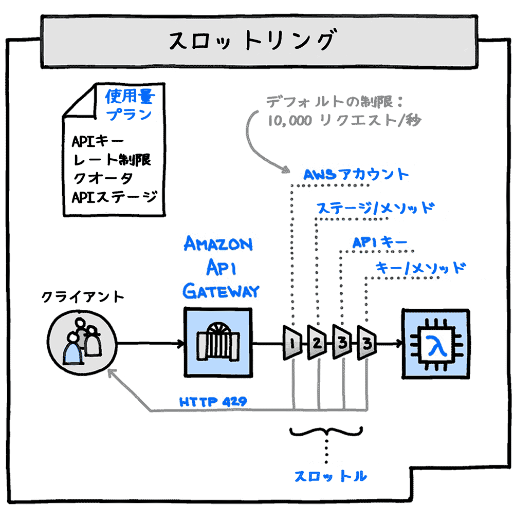
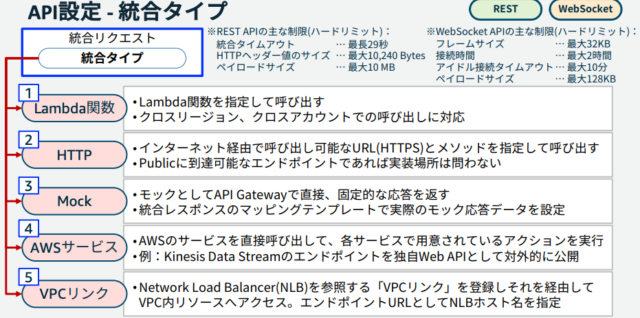
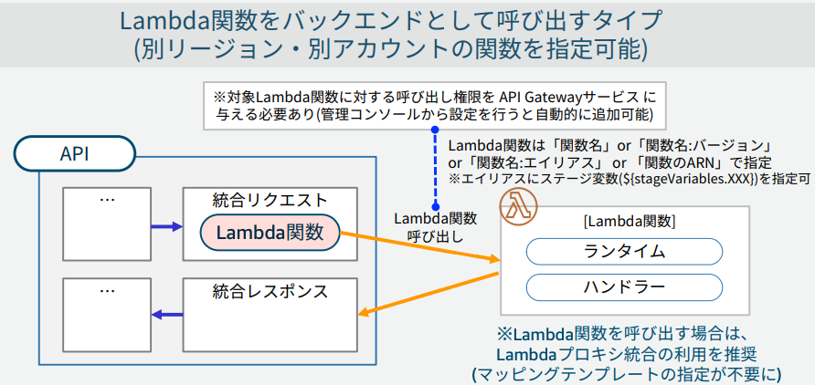
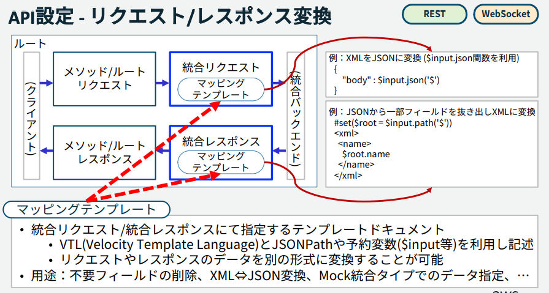
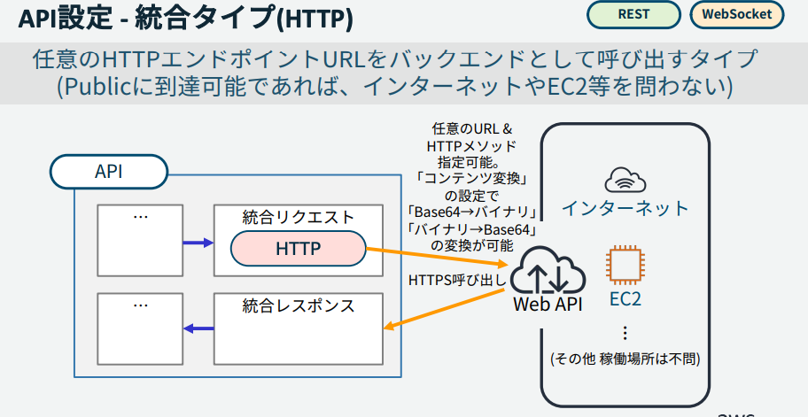
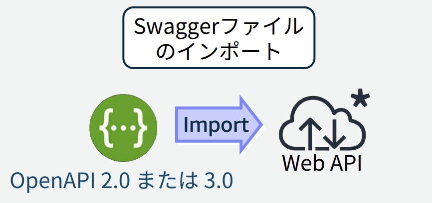

7. API GateWay¶
BlackBelt はこちら
7.1. API Gatewayとは¶
「Web API」の作成や公開、管理を行うためのフルマネージドサービス。
サーバーレスのため、APIの実行基盤のサーバー構築や維持管理はAWSが責任を負う。
API Gatewayを利用することでRESTなWebAPIを作成、公開、管理することができる。
7.2. API GatewayのAPIの種類¶
APIは3種類存在し、バックエンドのサービス、エンドポイントのタイプやCloudFrontが利用できるかなどの差がある
注意点として、APIのエンドポイント自体はHTTPSのみ
APIの種類は３種類
REST API
HTTP API
WebSocket API
バックエンドのサービスは5つ
Lambda
HTTPエンドポイント
Mock
AWS サービス
VPCリンク
エンドポイントのタイプは３種
エッジ最適化APIエンドポイント（Cloud Front)
プライベートAPIエンドポイント
リージョンAPIエンドポイント
7.2.1. APIで利用できる機能の差分について¶
RESTは古くからあって、HTTP APIはOIDCやOAuth対応など、最近の技術に対応している側面がある。
■認証認可
OAuthやOIDCの認証認可はHTTPでしか利用できないが、Cognitoオーソライザは、WebSocketやRESTで利用できる。
■エッジ最適化
エッジ最適化エンドポイントはRESTのみがサポートしている。
7.3. API GWのデプロイとステージ¶
APIはステージという論理的な環境にデプロイされる。APIがデプロイされると以下の形式のエンドポイントURLが払い出される
https://{api-id}.execute-api.{region}.amazonaws.com/{stageName}/...
{stageName}は好きに設定することができ、prd,stg,devのように定義する

7.3.1. ステージ変数¶
ステージごとに変数を定義することができ、呼び出すLambda関数のバージョンと関連づけることで、API GWのステージとリリースされるLambdaを関連づけることができる。

7.3.2. Canaryリリース¶
API GWでは既存ステージ上で、カナリアリリースを利用することができる。 新しいバージョンがCanaryリリースとして、デプロイされ、一部のユーザーが新しいバージョンを利用する。
7.4. API GWの処理フロー¶
以下の４つの設定箇所で処理を設定することができる
メソッドリクエスト
実行時に必要なデータやオプションデータを提供する統合リクエスト
統合レスポンス
メソッドレスポンス
メソッドレスポンスステータスコード、ヘッダー、本文を定義して、クライアントに返される前のバックエンドレスポンスをマッピングする

7.5. API GWのキャッシュ¶
API GWはステージごとにキャッシュを定義することができる。 キャッシュを更新した場合は、TTLを一時的に0にしたり、キャッシュをフラッシュすることで一時的にキャッシュを無効化する。
個別のリクエストがわでキャッシュを無効化したい場合は、Cache-Control:max-age=0を設定してリクエストする。
7.6. API GWのAPIキーと使用量プラン¶
APIキーを発行することで、APIキーを持つユーザーのみがアクセス可能なAPIを作成することができる。
使用量プランを作成することでAPIキーに対して、アクセス可能回数やアクセス頻度を設定することができる。
7.6.1. 実装の流れ¶
API GatewayのAPIキーと使用量プランについて が参考になる。
実装の流れとしては以下のステップを踏む
APIGWでAPIの作成（APIキーを有効化）
APIキーの作成
使用量プランの作成
使用量プラン、APIのステージ、APIキーを関連づける
7.6.2. スロットリング¶
API GWでは、流量制御の仕組みが実装されている。 流動制御により、過多なりクエストからAPIを守ったり、クライアントの使用量プランを作成できる。
流動制御はスロットリングと呼ばれるトークンバケットアルゴリズムであり、1リクエストを処理するたびにバケットないのTokenが消費される。 サーバー側で設定する上限によりバックエンドを守ることができるとともに、クライアント側に設定することで使用量の制限をAPIキーとして設定することができる。

7.7. API GWと認証認可¶
API GWにより、認証認可の仕組みを適用する場合い、いくつかの実現方法がある
IAMアクセス権限
クライアントは、IAMユーザーのアクセスキーをハッシュ化したAWS署名ver4をリクエストヘッダーに付与する。 API GWで署名を検証して問題なければAPIを呼び出す。Lambda オーソライザ
クライアントがリクエストに認証情報を付与して、Lambdaで認証して、IAMポリシーを返却する。 API GWでポリシー評価をして問題なければAPIを呼び出す。 以下２つの機能があるトークンベース
OAuthやSAMLを利用した認証を実装する場合やリクエストパラメータを使用するカスタム認証スキームリクエストベース
ヘッダーやクエリ文字列パラメータを組み合わせてはっっ新車IDを受け取る、（WebSocketはこっち）
Cognito オーソライザ
クライアントはCognitoで認証してJWTを発行してもらってJWTリクエストのヘッダーに付与する。 これは古くからあるRESTでも利用できる。JWT オーソライザ(OAuth/OIDC)
クライアントはOIDCやOAuth2のプロバイダーでで認証してJWTを発行してもらってJWTリクエストのヘッダーに付与する。 これは最近できたHTTPのみでサポートされている。
7.8. API GWの統合タイプ¶
全部で４つの統合タイプが準備されている。 実装時に、統合タイプとして、統合リソースのtypeを選択する
Lambda関数：プロキシ統合であればtypeはAWS_PROXYX
HTTP：HTTP_PROXYおよびHTTP
Mock：MOCK
AWSサービス：AWS
VPCリンク：

7.8.1. Lambda関数との統合¶
プロキシ統合と非プロキシ統合がある。
プロキシ統合：Lambdaからの返り値のフォーマットが固定
非プロキシ統合：フォーマットが決まっていないので、マッピングテンプレートを利用して、APIからの返り値を変更可能
指定するtypeについても、プロキシの場合はAWSではなくAWS_PROXYとなる点に注意

7.8.1.1. マッピングテンプレート¶
統合リクエストや統合レスポンスで指定するテンプレートドキュメントで、データの形式を変換する

7.8.2. HTTPとの統合¶
HTTPプロキシ統合またはHTTPカスタム統合を使用して、APIメソッドをHTTPエンドポイントに統合することが可能。 カスタム統合では、受信リクエストデータを統合リクエストにどのようにマッピングするかなどの設定が必要となる。

7.9. APIGWの監視¶
CloudWatchでAPIGWを監視した際に取得できるメトリクスは以下
4XXError：指定された期間に取得されたクライアント側エラーの数。
5XXError：指定された期間に取得されたサーバー側エラーの数。
Cache
HitCount：指定された期間内にAPI キャッシュから配信されたリクエストの数。(Cacheにヒットした数)Cache
MissCoun：API キャッシュが有効になっている特定の期間における、バックエンドから提供されたリクエストの数。(CacheからMissしてバックエンドへ問い合わせた数)Count：指定された期間内の API リクエストの合計数。
IntegrationLatency：API Gateway がバックエンドにリクエストを中継してから、レスポンスを受け取るまでの時間。
Latency：API Gateway がクライアントからリクエストを受け取ってから、クライアントにレスポンスを返すまでの時間。
7.10. 新規APIの作成¶
API GWでAPIのインポート機能があり、外部定義ファイルからREST APIをインストールすることができる

対象としては、SwaggerとOpenAPIの定義ファイルがサポートされている。
7.11. APIGWのエラーメッセージ¶
7.11.1. 502BAD Gateway¶
プロキシ統合では、フォーマットが決まっているが、この形式に従わない場合プロキシ統合で形式違のエラーが発生する。
7.11.2. INTEGRATION_FAILURE¶
統合が失敗した場合のGWレスポンスで、レスポンスタイプが未指定の場合。
7.11.3. INTEGRATAION_TIMEOUT¶
API GWでタイムアウト値をカスタマイズすることができ、50msec-29secの間で設定可能 Lambda、Lambdaプロキシ、HTTP、HTTPプロキシ、AWS統合全てにおいて、最大29secになっている。